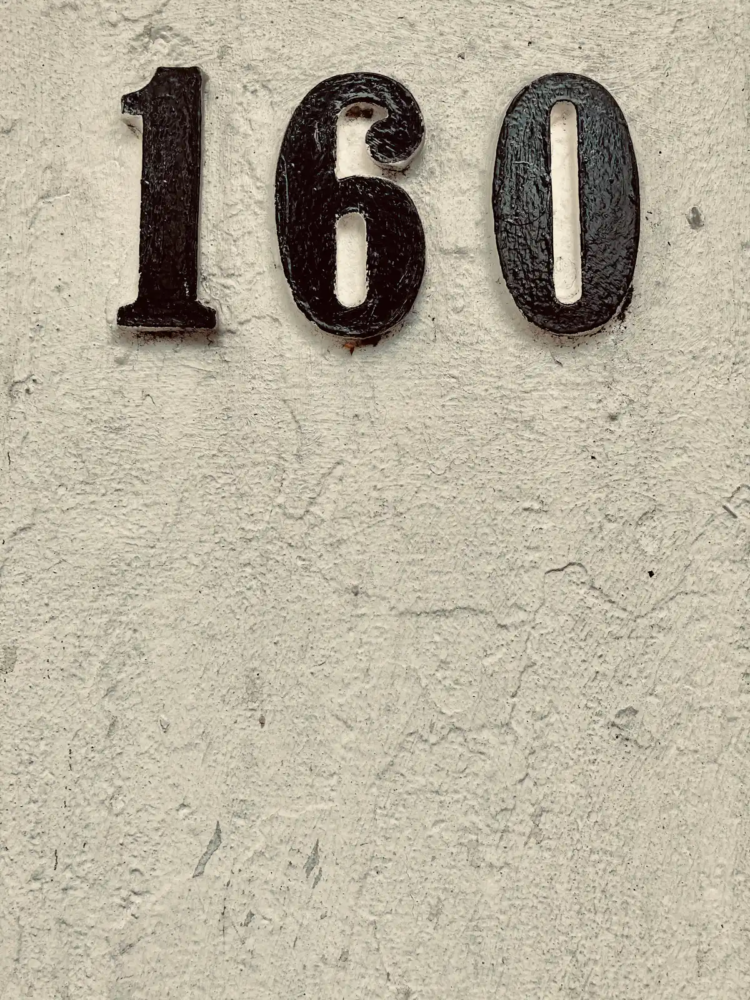
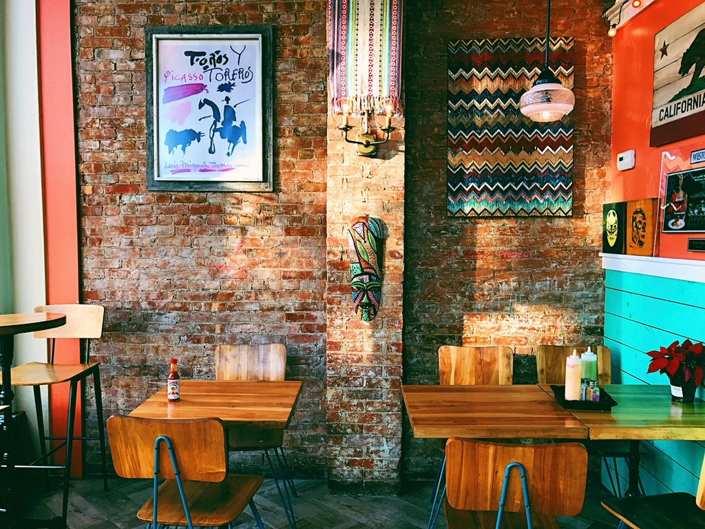
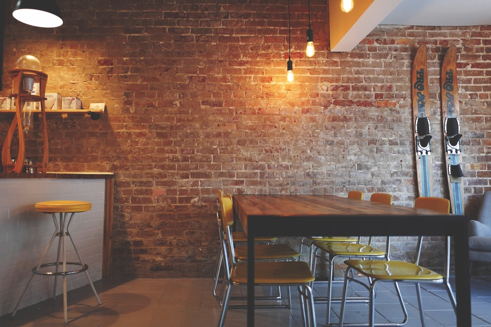
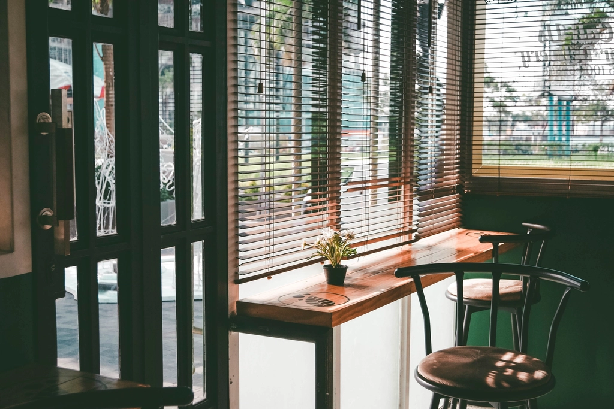
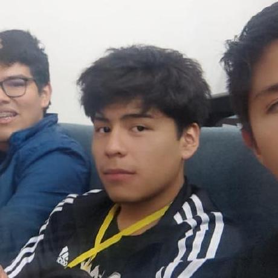

MVP onchain para cafeterías independientes · visión de infraestructura replicable
PUNCH
Una red de cafeterías independientes que compite como una cadena.

Problema
Un café local compite solo. Starbucks compite como sistema.
Cada independiente paga por atraer y retener al mismo cliente. Una cadena comparte marca, loyalty, datos y presupuesto entre todos sus locales.
Solución
Una compra en un café fortalece toda la red.
⌗Paga con Yape en Café A.El barista muestra un QR; el dinero sigue directo al negocio.
+1Recibe 1 PUNCH.Compra y origen quedan verificados; el cliente suma un sello portable.
12Canjea en Café B.La red convierte compras repetidas en visitas entre negocios locales.
Propuesta de valor
PUNCH vende demanda compartida, no descuentos.
El reward atrae. Las visitas pagadas y el retorno hacen rentable la red.
Cliente nuevo entra, paga y deja margen antes inexistente.
Red mantiene cliente activo entre cafeterías y genera retorno pagado.
Complementa economía; no es motor principal.
PUNCH
Cada café conserva la venta directa. Todos participan del flujo que la red crea.
Roadmap + visión
Cafeterías prueban el modelo. La infraestructura escala.
Este MVP valida mecanismos económicos y operativos en Arbitrum. El mismo modelo puede coordinar otras redes locales sin quitar al negocio su cliente ni su caja.
Arbitrum Sepolia, contratos reales, campañas, emisión y redención. MockPEN prueba economía y UX sin fingir tesorería productiva.
Reemplazar token de prueba por liquidación real y parametrizar rewards, campañas y fondos sin reescribir contratos.
Replicar el modelo en restaurantes, belleza, fitness y comercio barrial sobre Arbitrum.
PUNCH puede ser infraestructura base para emprendedores que compiten contra actores con escala. Cafés son el caso inicial: dolor claro, operación frecuente y flujo demostrable de punta a punta.



Posicionamiento
La diferencia no es el sello. Es quién coordina la red.
Alternativas actuales resuelven una parte: loyalty, alcance o múltiples locales. PUNCH une esas capacidades entre negocios con dueños distintos.
Nuestro competidor real es el aislamiento: publicidad pagada por separado, datos fragmentados y clientes que la red local pierde frente a cadenas.
| Alternativa | Lealtad | Red de negocios distintos | Demanda compartida | Reglas verificables |
|---|---|---|---|---|
| Sellos digitales | Sí | No | No | No |
| Promos de pago | No | No | Sí | No |
| Loyalty de cadena | Sí | No, un solo dueño | No entre independientes | No |
| PUNCH | Sí | Sí | Sí | Sí |
Motor de crecimiento
Más clientes nuevos. Más retorno por generarlos.
PUNCH convierte cada visita cruzada en una señal verificable. Así, la red puede reconocer a los negocios que realmente llevan clientes pagados a otros miembros.
Con PUNCH, tus clientes aumentan: cada negocio de la red abre una nueva puerta para que más personas te descubran, te visiten y regresen.
Crédito de origen = participación proporcional en referencias verificadas de la red.
Campaña, recomendación o ruta PUNCH genera visita pagada en otro miembro.
Origen y compra quedan registrados para que la atribución no dependa de un reporte manual.
Cada mes, el pool de origen se distribuye proporcionalmente entre quienes generaron referencias verificadas.
Equipo
Producto que se vende. Tecnología que sí corre.
Dos perfiles complementarios para cerrar el ciclo completo: entender mercado, elegir qué construir, convertirlo en producto funcional y demostrarlo.
Adrian define dirección y adopción. Ryan convierte esa visión en sistema funcional.

ProductoVentas · GTM
Adrian Issac
Convierte problemas reales en productos que la gente entiende, prueba y adopta.
- AI Product Manager en MyWorkIn
- Experiencia lanzando producto desde cero y construyendo distribución
- En PUNCH: producto, UX, narrativa y go-to-market
Ejecución técnica
Ryan Valdivia
Aterriza una arquitectura ambiciosa en software funcional, conectado y demostrable.
- Builder full-stack con experiencia frontend y backend
- Base técnica en TypeScript, Java y Python
- En PUNCH: implementación, integración y entrega técnica